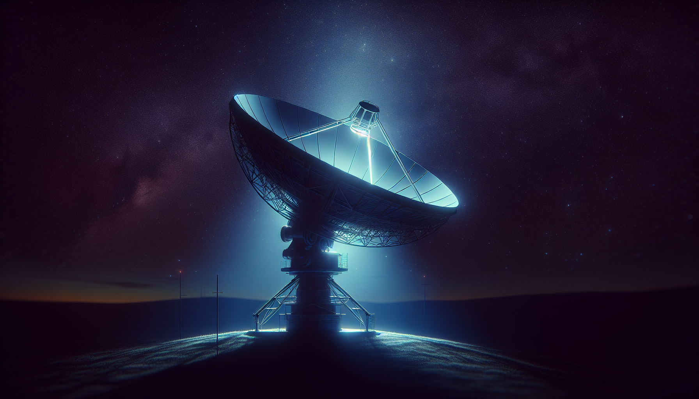

← Stage 索引
更新：
Northwood Space：衛星的地面革命 ✅ Stage 審閱
🎬 Stage 影片
🖼 YouTube 封面

設計說明
Speaker BRIDGIT MENDLER
大標 沒人在 看的問題
主文 一萬三千顆衛星 地面接不住
副標 太空最大的瓶頸，竟然在地球上
🖼 章節背景圖（DALL-E 3）

00 · 開場
0:00
01 · 從迪士尼到太空
0:10
02 · 飄在太空的石頭
0:27
03 · 三年變三個月
0:45
04 · SpaceX 與地面端
1:09
05 · 早期互聯網時刻
1:23
✍️ 中文腳本
載入中...
📁 素材檔案
📺 YouTube 發布設定
▶
愛播客 — YouTube 發布文案
⏳ 待審閱載入中...
載入中...